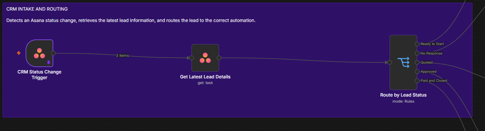
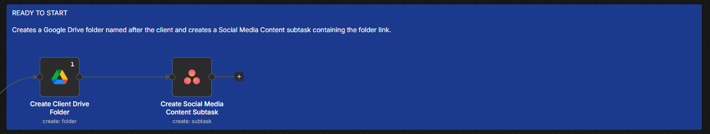
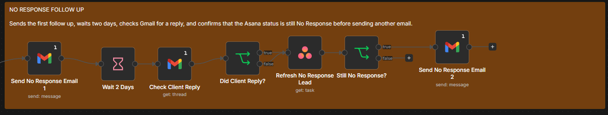
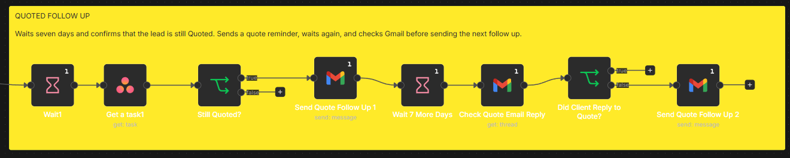
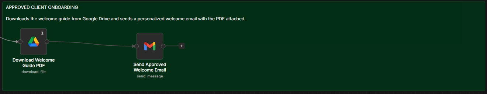
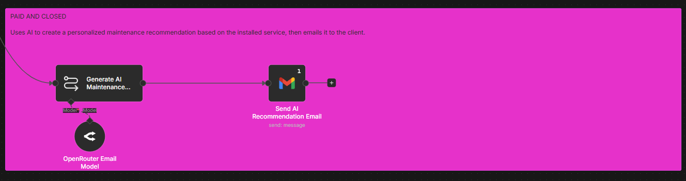
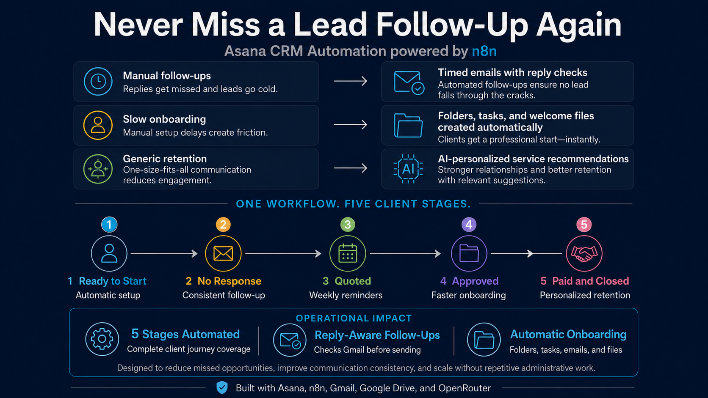
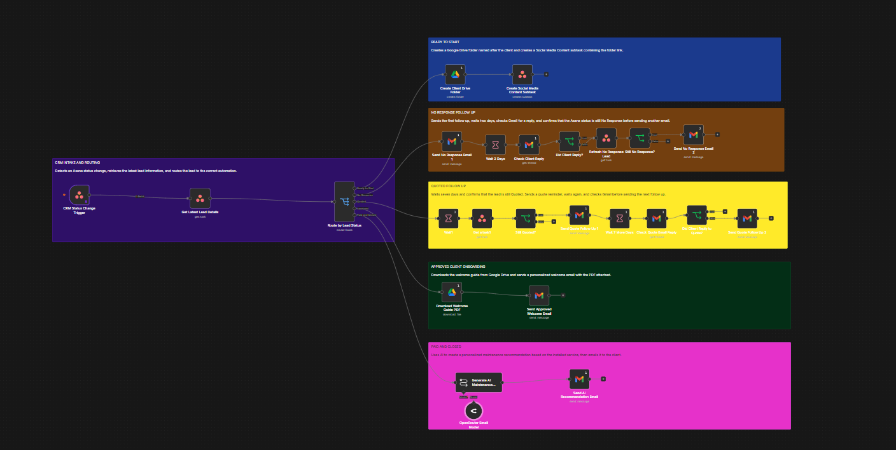

1
CRM Intake and Routing
An Asana status change triggers the workflow. The latest lead details are retrieved, then routing rules send the project to the correct automation branch.

An automated client management workflow that routes projects by status, manages follow ups, prepares onboarding materials, and supports retention communication from one connected process.
The workflow uses Asana as the source of project status. When a status changes, n8n retrieves the latest client information and routes the project to the correct automation for setup, follow up, onboarding, or retention.
Watch the Asana CRM automation route project status changes, manage follow ups, prepare onboarding materials, and update client tasks through one connected workflow.
The automation follows six major stages. Each branch begins with the current Asana project status and performs only the actions required for that stage.
An Asana status change triggers the workflow. The latest lead details are retrieved, then routing rules send the project to the correct automation branch.

The workflow creates a Google Drive client folder and adds a Social Media Content subtask in Asana with the folder link.

The first follow up is sent, the workflow waits two days, checks Gmail for a reply, refreshes the Asana lead, and confirms that the status is still No Response before sending again.

After a scheduled wait, the workflow verifies that the lead remains Quoted, sends a reminder, checks Gmail for a response, and sends the next follow up only when required.

The approved branch downloads the welcome guide from Google Drive and sends a personalized welcome email with the PDF attached.

OpenRouter AI creates a maintenance recommendation based on the installed service, then Gmail sends the personalized message to the client.

The solution overview explains the business value, while the full workflow shows the complete technical implementation.


The workflow includes safeguards that prevent communication from continuing when the customer has replied or the project status has changed.
| Tool | Role in the Solution |
|---|---|
| Asana | Stores lead details, project status, tasks, and subtasks. |
| n8n | Runs the routing, conditions, wait steps, and integrations. |
| Gmail | Sends client emails and checks for customer replies. |
| Google Drive | Creates client folders and stores the welcome guide. |
| OpenRouter AI | Generates the personalized maintenance recommendation. |
Before live deployment, the workflow should be validated for reliability, privacy, and ongoing support.
View the full project visuals or return to the AI Automation portfolio.